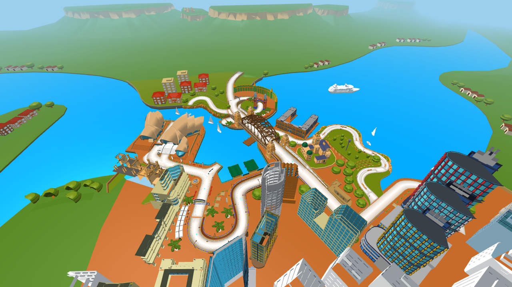
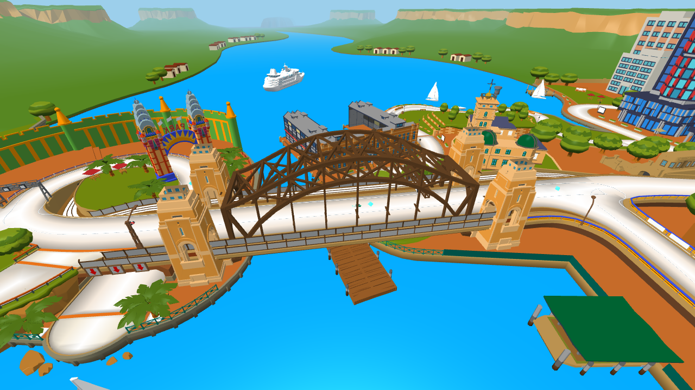
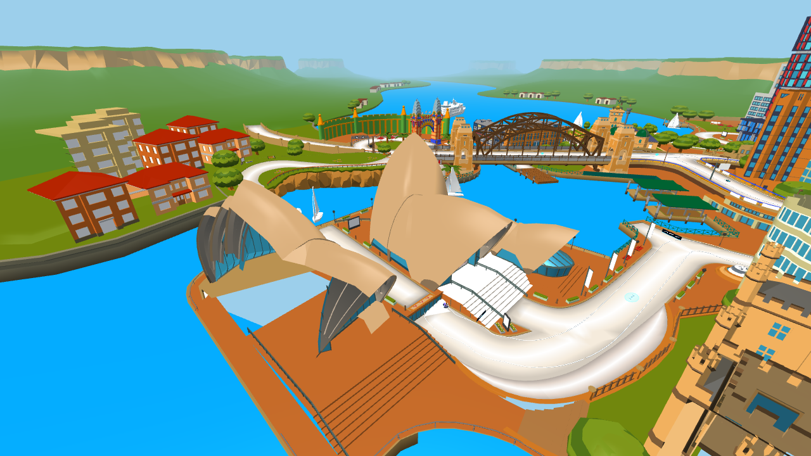
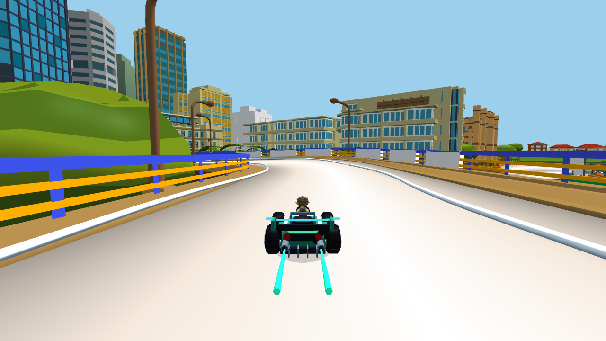
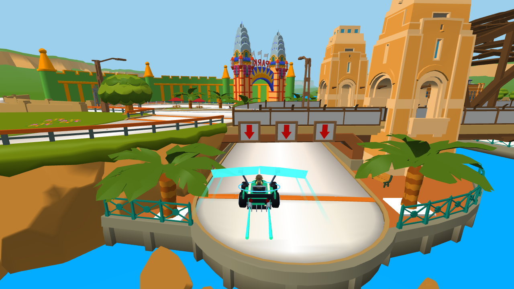

RIBALTATI · TERZO CIRCUITOSydney Sprint
Lungomare, Opera House, volo sul porto e Harbour Bridge. Tre giri sulle strade del modello originale, con i Lucky Block e le abilità di Ribaltati 1.4.
1.435 unità / giro13 checkpoint5/5 bot al traguardo42,2 FPS · cinque visuali

Il modello completo con Opera House, Harbour Bridge, città e porto.

Harbour Bridge e il tratto veloce sopra il porto.
Opera House e il piazzale che porta alla rampa originale.
Curve cittadine: corridoio visibile, sterzo e derapata ordinari.
Volo sul porto con le ali e il controllo già usati su Arcobaleno.Campione FPS: RTX 3050, Chrome headless/D3D11, HIGH, 1280×720, scala 1, ombre attive, 8 secondi con cinque visuali distribuite sulla pista. Gara simulata: cinque arrivi in 107,5–116,3 s, 15 planate atterrate e zero cadute.
Report e limiti delle verifiche · Apri Party Game